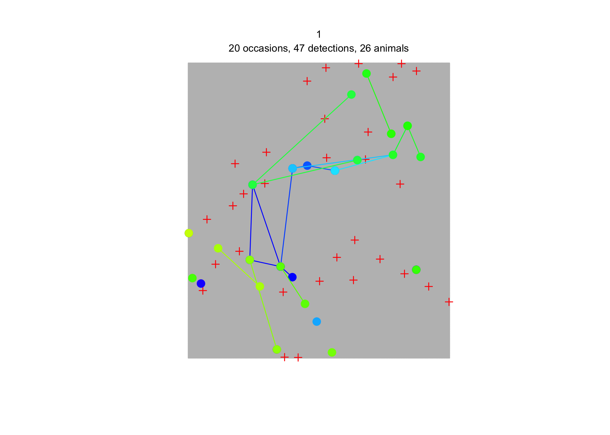
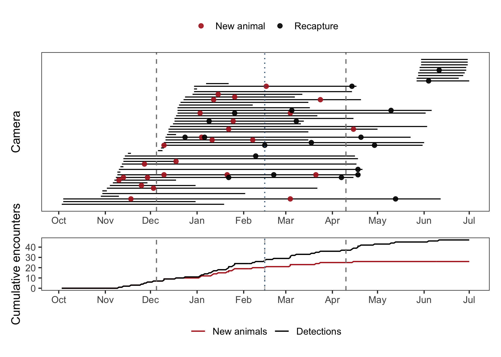

# Packages needed
library(dplyr)
library(secr)
library(tidyr)
library(stringr)
library(lubridate)
library(ggplot2)
library(patchwork)
# File paths and coordinate reference system used later in the workflow
my_crs <- "+proj=utm +zone=44 +datum=WGS84 +units=m +no_defs"
traps_file <- "tutorials/namkha_basic/data/traps.csv"
detections_file <- "tutorials/namkha_basic/data/detections.csv"
output_file <- "tutorials/namkha_advanced/output/namkha_advanced_secr_inputs_capthist.RData"
fig_dir <- "tutorials/namkha_advanced/output/fig"
dir.create(fig_dir, recursive = TRUE, showWarnings = FALSE)Create advanced capture histories
1 Covered in this tutorial
- Create full-survey, shortened-survey, and multisession
capthistobjects - Calculate occasion-specific usage for a long full survey
- Recalculate effort for a shortened survey window
- Split detections and trap effort into temporal sessions
- Make diagnostic plots showing detections and camera operation through time
- Save capture-history objects for the advanced model-fitting scripts
2 Introduction
The basic tutorial created a single capture-history object for one survey period. The advanced tutorial keeps that full-survey analysis, but it also introduces two responses to a longer survey period: shortening the survey window and fitting a multisession model.
The main complication is closure. A long camera-trap survey gives more time to detect animals, but it also makes the closed-population assumption less plausible. Here we create three related inputs so that later tutorials can compare the consequences of using the full survey, a shorter closure-plausible window, and two temporal sessions.
The Namkha survey was logistically difficult, with cameras deployed over several waves rather than all installed and retrieved at the same time. This is why the tutorial pays careful attention to camera operating dates, occasion-specific usage, and the timing of first detections.
3 Preparations
The script uses the same trap and detection CSV files as the basic tutorial. The output is written to the advanced tutorial folder because later advanced scripts need the full, short, and multisession objects.
The full survey is divided into 14-day occasions for diagnostics. The shortened survey window is a separate analysis, not just a plotting device.
# User settings for the advanced tutorial.
# These control the full-survey occasions used for closure diagnostics and the
# shorter survey window used as one alternative to the full long survey.
full_occ_length <- 14
short_survey_start <- as.Date("2022-12-05")
short_survey_end <- short_survey_start + months(4) + days(5)4 Read and prepare camera-trap data
We begin as in the basic tutorial: read the camera file, keep functional cameras, convert dates, and create trap covariates. The survey start, survey end, and midpoint are defined from the active cameras.
# Read trap data
cameras <- read.csv(traps_file, stringsAsFactors = FALSE, check.names = FALSE)
# Removing cameras that were lost or malfunctioned
cameras <- cameras %>%
filter(Note == "Functional")
# Convert trap dates to Date format
cameras <- cameras %>%
mutate(
start_date = as.Date(start_date, format = "%d/%m/%Y"),
end_date = as.Date(end_date, format = "%d/%m/%Y")
)
# Define the overall survey period from the active cameras
survey_start <- min(cameras$start_date, na.rm = TRUE)
survey_end <- max(cameras$end_date, na.rm = TRUE)
mid_survey <- survey_start + floor(as.numeric(survey_end - survey_start) / 2)
ms_session_end <- as.Date(mid_survey)The detector covariates are the same type of simple binary camera-site covariates used in the basic tutorial. They are attached to each traps object later.
# Make a data frame with all the traps information
# This gets used to create the secr traps object
# but is also useful to have outside the secr package environment
traps_df <- cameras %>%
select(
# essential columns
session, trapID, x, y, effort,
# additional covariates
Topography, Water, Altitude
)
# Create simple binary trap covariates from the descriptive camera metadata.
# These can be used later as detector covariates in secr models.
traps_df <- traps_df |>
mutate(
cliff = if_else(str_detect(str_to_lower(Topography), "cliff"), 1, 0),
hill = if_else(str_detect(str_to_lower(Topography), "hill"), 1, 0),
valley_stream = if_else(str_detect(str_to_lower(Topography), "valley|stream"), 1, 0)
) %>%
as.data.frame()5 Create the full-survey traps object
The full survey is long enough that closure deserves attention. For count detectors, the model uses total counts and effort, but occasion-specific usage is still useful for closure diagnostics and for representing the survey through time.
# Create the secr traps object for the full survey.
# ADVANCED ISSUE: the full survey is longer than a period over which closure can
# reasonably be assumed, so here we will create multiple occasions and calculate usage
# by occasion rather than collapsing everything into a single occasion and using
# total effort.
# We do this only so that we can perform closure tests - it doesn't affect other
# secr results because for count detectors only total counts (and effort) matters
full_traps <- read.traps(
data = traps_df |> dplyr::select(trapID, x, y),
detector = "count",
trapID = "trapID"
)
# Define occasion boundaries across the full survey period.
# Each occasion here is a 14-day interval (set by full_occ_length), except
# possibly the last one.
full_occ_start <- seq.Date(from = survey_start, to = survey_end, by = paste(full_occ_length, "days"))
full_occ_start <- ymd_hms(paste(full_occ_start, "00:00:00"))
full_occ_end <- c(na.omit(dplyr::lead(full_occ_start - minutes(1))), ymd_hms(paste(survey_end, "23:59:59")))
full_occ_bins <- interval(start = full_occ_start, end = full_occ_end)
# Store the dates each camera was operating as an interval
cameras <- cameras %>%
mutate(
camera_on = interval(start = start_date, end = end_date)
)The helper below calculates how many days a camera was active during each occasion. This gives the usage matrix needed by secr for the full-survey capture history.
# Function to calculate the overlap between one interval and one or more other
# intervals, and return the result as a duration.
int_overlaps_numeric <- function(int1, int2) {
x <- lubridate::intersect(int1, int2)@.Data
x[is.na(x)] <- 0
as.duration(x)
}
# Calculate camera usage in each occasion.
usage_full <- matrix(0, nrow = nrow(cameras), ncol = length(full_occ_bins))
for (i in seq_len(nrow(cameras))) {
usage_full[i, ] <- round(
as.numeric(int_overlaps_numeric(cameras$camera_on[i], full_occ_bins)) / (24 * 60 * 60)
)
}
# Add the usage matrix to the secr traps object
usage(full_traps) <- usage_full
# Add trap covariates to the full-survey traps object.
covariates(full_traps)$Topography <- traps_df$Topography
covariates(full_traps)$cliff <- traps_df$cliff
covariates(full_traps)$hill <- traps_df$hill
covariates(full_traps)$valley_stream <- traps_df$valley_stream
covariates(full_traps)$Water <- traps_df$Water
covariates(full_traps)$Altitude <- traps_df$Altitude
# Check
names(covariates(full_traps))[1] "Topography" "cliff" "hill" "valley_stream"
[5] "Water" "Altitude" 6 Create the full-survey capture history
Detections are read once and then reused for all three capture-history versions. The full-survey capture history keeps sex because the final model-fitting script demonstrates sex-specific models.
# Read detections, standardise IDs, and keep only detections within the survey period
capts_raw <- read.csv(detections_file, stringsAsFactors = FALSE, check.names = FALSE)
# Convert detection dates to Date format
capts_raw <- capts_raw |>
mutate(
date = as.Date(date, format = "%m/%d/%Y"),
)
# Drop any detections falling outside the survey period defined above
if (nrow(capts_raw |> filter((date < survey_start) | (date > survey_end)))) {
print("Dropping detections outside survey period!")
} else {
print("All detections within survey period")
}[1] "All detections within survey period"capts_raw <- capts_raw |>
filter(date >= survey_start, date <= survey_end) %>%
arrange(date, animalID, trapID)
# Create an occasion indicator matching the 14-day full-survey intervals above.
capts_full <- capts_raw %>%
mutate(
occasion = floor(as.numeric(date - survey_start) / full_occ_length) + 1
)
# make.capthist needs the standard secr columns only.
# Keep sex because the advanced tutorial later introduces sex-specific models.
capts_full <- capts_full %>%
dplyr::select(session, animalID, occasion, trapID, sex) %>%
as.data.frame()
full_ch <- make.capthist(captures = capts_full, traps = full_traps)
verify(full_ch)
summary(full_ch)Object class capthist
Detector type count
Detector number 55
Average spacing 2504.368 m
x-range 534489 576620 m
y-range 3316462 3360989 m
Usage range by occasion
1 2 3 4 5 6 7 8 9 10 11 12 13 14 15 16 17 18 19 20
min 0 0 0 0 0 0 0 0 0 0 0 0 0 0 0 0 0 0 0 0
max 14 14 14 14 14 14 14 14 14 14 14 14 14 14 14 14 14 14 14 5
Counts by occasion
1 2 3 4 5 6 7 8 9 10 11 12 13 14 15 16 17 18 19 20
n 0 0 2 3 4 2 3 7 2 4 4 2 2 3 4 2 0 2 0 0
u 0 0 2 3 4 1 2 5 2 2 2 0 2 1 0 0 0 0 0 0
f 12 10 2 2 0 0 0 0 0 0 0 0 0 0 0 0 0 0 0 0
M(t+1) 0 0 2 5 9 10 12 17 19 21 23 23 25 26 26 26 26 26 26 26
losses 0 0 0 0 0 0 0 0 0 0 0 0 0 0 0 0 0 0 0 0
detections 0 0 2 3 4 2 3 7 3 4 4 2 2 3 4 2 0 2 0 0
detectors visited 0 0 2 3 4 2 2 7 3 4 4 2 2 3 4 2 0 2 0 0
detectors used 3 6 18 16 21 33 35 32 30 29 28 28 20 18 12 7 11 15 9 8
Total
n 46
u 26
f 26
M(t+1) 26
losses 0
detections 47
detectors visited 46
detectors used 379
Individual covariates
sex
Female : 8
Male :15
Unknown: 3 summary(full_ch, terse = TRUE) Occasions Detections Animals Detectors
20 47 26 55 7 Check closure and movement diagnostics
The full survey was divided into occasions mainly so that we can inspect closure diagnostics. A low p-value from closure.test() is evidence against closure over the occasions included in the test. This is not a mechanical pass/fail rule, but it is useful evidence when deciding whether to use the full survey, the shortened survey, or a multisession analysis.
# Closure test over the full survey
closure.test(full_ch) statistic p
-1.56677248 0.05858394 # Closure test over the occasions overlapping the shortened survey window
short_occasion_start <- floor(as.numeric(short_survey_start - survey_start) / full_occ_length) + 1
short_occasion_end <- floor(as.numeric(short_survey_end - survey_start) / full_occ_length) + 1
closure.test(subset(full_ch, occasions = short_occasion_start:short_occasion_end)) statistic p
-0.06098922 0.47568390 The capture history can also be inspected spatially. trapsPerAnimal() shows how many cameras detected each animal, and the track plot draws simple straight lines between cameras for animals detected at more than one site. These are descriptive checks only; they do not model movement paths.
trapsPerAnimal(full_ch) 1 2 3
14 7 5 plot(full_ch, tracks = TRUE)
As a rough check on the trap-buffer distance, autoini() can provide an initial estimate of the spatial scale parameter. A common rule of thumb is that the mask buffer should be larger than about four times this scale.
buffer_check <- 25000
qnd <- autoini(
capthist = full_ch,
mask = make.mask(traps = full_traps, buffer = buffer_check, spacing = 1500)
)
qnd$sigma * 4[1] 23704.848 Create the shortened-survey capture history
Shortening the survey is one direct response to closure concerns. The important detail is that detector effort must also be shortened: cameras operating outside the chosen window do not contribute effort to this analysis.
# ADVANCED ISSUE: one way to deal with the long survey is to shorten it to a
# period where closure is more plausible.
# Keep only detections within the shortened survey period
short_capts_raw <- capts_raw %>%
filter(date >= short_survey_start, date <= short_survey_end)
# Adjust trap effort to the shortened survey period.
short_traps_df <- cameras %>%
mutate(
effort_short = pmax(
0,
as.numeric(pmin(end_date, short_survey_end) - pmax(start_date, short_survey_start), units = "days")
)
)
short_traps_df <- short_traps_df |>
dplyr::select(
trapID, x, y, effort_short,
Topography, Water, Altitude
) |>
left_join(
traps_df %>% dplyr::select(trapID, cliff, hill, valley_stream),
by = "trapID"
) %>%
as.data.frame()
short_traps <- read.traps(
data = short_traps_df |> dplyr::select(trapID, x, y, effort = effort_short),
detector = "count",
trapID = "trapID",
binary.usage = FALSE
)
covariates(short_traps)$Topography <- short_traps_df$Topography
covariates(short_traps)$cliff <- short_traps_df$cliff
covariates(short_traps)$hill <- short_traps_df$hill
covariates(short_traps)$valley_stream <- short_traps_df$valley_stream
covariates(short_traps)$Water <- short_traps_df$Water
covariates(short_traps)$Altitude <- short_traps_df$Altitude
short_capts <- short_capts_raw %>%
mutate(occasion = 1L) %>%
dplyr::select(session, animalID, occasion, trapID, sex) %>%
as.data.frame()
short_ch <- make.capthist(captures = short_capts, traps = short_traps)
verify(short_ch)
summary(short_ch)Object class capthist
Detector type count
Detector number 55
Average spacing 2504.368 m
x-range 534489 576620 m
y-range 3316462 3360989 m
Usage range by occasion
1
min 0
max 126
Counts by occasion
1 Total
n 21 21
u 21 21
f 21 21
M(t+1) 21 21
losses 0 0
detections 30 30
detectors visited 17 17
detectors used 40 40
Individual covariates
sex
Female : 5
Male :13
Unknown: 3 summary(short_ch, terse = TRUE) Occasions Detections Animals Detectors
1 30 21 55 9 Create the multisession capture history
The multisession analysis also addresses the long survey, but it keeps both temporal blocks instead of discarding detections outside a shorter window. Each session needs its own traps object because effort differs by session.
# ADVANCED ISSUE: another way to deal with the long survey is to split it into
# temporal sessions and run a multisession analysis.
# Divide detections into two sessions based on date
ms_capts <- capts_raw %>%
mutate(
session = if_else(date < ms_session_end, 1L, 2L),
occasion = 1L
) %>%
dplyr::select(session, animalID, occasion, trapID, sex) %>%
as.data.frame()
# Calculate trap effort separately in each session so that each multisession
# traps object has the correct count-detector usage.
ms_traps_df <- cameras %>%
mutate(
effort_s1 = pmax(
0,
as.numeric(pmin(end_date, ms_session_end - days(1)) - pmax(start_date, survey_start), units = "days")
),
effort_s2 = pmax(
0,
as.numeric(pmin(end_date, survey_end) - pmax(start_date, ms_session_end), units = "days")
)
)
ms_traps_df <- ms_traps_df |>
dplyr::select(trapID, x, y, effort_s1, effort_s2, Topography, Water, Altitude) |>
left_join(
traps_df %>% dplyr::select(trapID, cliff, hill, valley_stream),
by = "trapID"
) |>
pivot_longer(
cols = c(effort_s1, effort_s2),
names_to = "session",
values_to = "effort"
) %>%
mutate(
session = if_else(session == "effort_s1", 1, 2)
) %>%
as.data.frame()
# Create a list of secr traps objects, one for each session
ms_traps_list <- split(ms_traps_df, f = ms_traps_df$session)
traps_ms <- vector("list", length(ms_traps_list))
for (i in seq_along(ms_traps_list)) {
this_traps_df <- ms_traps_list[[i]]
traps_ms[[i]] <- read.traps(
data = this_traps_df %>% dplyr::select(trapID, x, y, effort),
detector = "count",
trapID = "trapID",
binary.usage = FALSE
)
covariates(traps_ms[[i]])$Topography <- this_traps_df$Topography
covariates(traps_ms[[i]])$cliff <- this_traps_df$cliff
covariates(traps_ms[[i]])$hill <- this_traps_df$hill
covariates(traps_ms[[i]])$valley_stream <- this_traps_df$valley_stream
covariates(traps_ms[[i]])$Water <- this_traps_df$Water
covariates(traps_ms[[i]])$Altitude <- this_traps_df$Altitude
}
names(traps_ms) <- c("1", "2")
ch_ms <- make.capthist(captures = ms_capts, traps = traps_ms)
verify(ch_ms)No errors found :-)ch_ms <- shareFactorLevels(ch_ms, stringsAsFactors = FALSE)
verify(ch_ms)No errors found :-)summary(ch_ms)$`1`
Object class capthist
Detector type count
Detector number 55
Average spacing 2504.368 m
x-range 534489 576620 m
y-range 3316462 3360989 m
Usage range by occasion
1
min 0
max 133
Counts by occasion
1 Total
n 20 20
u 20 20
f 20 20
M(t+1) 20 20
losses 0 0
detections 26 26
detectors visited 18 18
detectors used 46 46
Individual covariates
sex
Female : 5
Male :13
Unknown: 2
$`2`
Object class capthist
Detector type count
Detector number 55
Average spacing 2504.368 m
x-range 534489 576620 m
y-range 3316462 3360989 m
Usage range by occasion
1
min 0
max 117
Counts by occasion
1 Total
n 16 16
u 16 16
f 16 16
M(t+1) 16 16
losses 0 0
detections 21 21
detectors visited 15 15
detectors used 37 37
Individual covariates
sex
Female :4
Male :9
Unknown:3 summary(ch_ms, terse = TRUE) 1 2
Occasions 1 1
Detections 26 21
Animals 20 16
Detectors 55 55shareFactorLevels() is used because multisession objects must represent factor covariates consistently across sessions. Without this, the same covariate can have different levels in different sessions, which can cause problems when fitting shared-parameter models.
10 Make diagnostic plots
The two diagnostic plots summarise why the advanced workflow includes alternatives to the full survey. One plot shows cumulative detections and animals through time; the other shows camera operation dates and detections at each camera.
# Summarise detections by day for a simple capture-history diagnostic plot
daily_detections <- capts_raw %>%
mutate(
ndets = 1,
first_appearance = !duplicated(animalID)
) %>%
complete(date = seq.Date(survey_start, survey_end, by = "day")) %>%
mutate(
ndets = replace_na(ndets, 0),
first_appearance = replace_na(first_appearance, FALSE)
) %>%
arrange(date) %>%
mutate(
cumdets = cumsum(ndets),
cumn = cumsum(first_appearance)
) %>%
dplyr::select(date, ndets, cumdets, cumn) %>%
pivot_longer(cols = c(cumn, cumdets), names_to = "measure", values_to = "value") %>%
mutate(
measure = recode(measure, cumn = "New animals", cumdets = "Detections"),
measure = factor(measure, levels = c("New animals", "Detections"))
)
capture_history_plot <- ggplot(daily_detections, aes(x = date, y = value, colour = measure)) +
geom_line(linewidth = 0.6) +
geom_vline(xintercept = mid_survey, colour = "grey75", linetype = 2) +
geom_vline(xintercept = short_survey_start, colour = "grey50", linetype = 2) +
geom_vline(xintercept = short_survey_end, colour = "grey50", linetype = 2) +
geom_vline(xintercept = ms_session_end, colour = "steelblue4", linetype = 3) +
scale_x_date(date_breaks = "1 month", date_labels = "%b") +
scale_colour_manual(values = c("New animals" = "firebrick", "Detections" = "black")) +
labs(x = NULL, y = "Cumulative encounters", colour = NULL) +
theme_bw(base_size = 12) +
theme(panel.grid = element_blank(), legend.position = "bottom")
cameras_for_plot <- cameras %>%
mutate(plot_order = rank(start_date, ties.method = "first")) %>%
arrange(plot_order)
detections_for_plot <- capts_raw %>%
mutate(
detection_type = if_else(!duplicated(animalID), "New animal", "Recapture")
) %>%
left_join(
cameras_for_plot %>% dplyr::select(trapID = trapID, plot_order),
by = "trapID"
)
camera_operation_plot <- ggplot(
cameras_for_plot,
aes(xmin = pmax(start_date, survey_start), xmax = pmin(end_date, survey_end), y = plot_order)
) +
geom_linerange(linewidth = 0.5) +
geom_point(
data = detections_for_plot,
aes(x = date, y = plot_order, colour = detection_type),
inherit.aes = FALSE,
size = 1.8,
alpha = 0.9
) +
geom_vline(xintercept = short_survey_start, colour = "grey50", linetype = 2) +
geom_vline(xintercept = short_survey_end, colour = "grey50", linetype = 2) +
geom_vline(xintercept = ms_session_end, colour = "steelblue4", linetype = 3) +
scale_x_date(date_breaks = "1 month", date_labels = "%b") +
scale_colour_manual(values = c("New animal" = "firebrick", "Recapture" = "black")) +
labs(x = NULL, y = "Camera", colour = NULL) +
theme_bw(base_size = 12) +
theme(
panel.grid = element_blank(),
axis.text.y = element_blank(),
axis.ticks.y = element_blank(),
legend.position = "top"
)
combined_plot <- camera_operation_plot / capture_history_plot + plot_layout(heights = c(3, 1))
combined_plot
The plots are saved for checking and for use in other teaching materials.
ggsave(
filename = file.path(fig_dir, "namkha_capture_history_over_time.png"),
plot = capture_history_plot,
width = 8,
height = 3.5,
dpi = 200
)
ggsave(
filename = file.path(fig_dir, "namkha_camera_operation_dates.png"),
plot = camera_operation_plot,
width = 8,
height = 5.5,
dpi = 200
)
ggsave(
filename = file.path(fig_dir, "namkha_capture_history_summary.png"),
plot = combined_plot,
width = 8,
height = 7,
dpi = 200
)11 Save inputs for later scripts
The saved file contains all three capture histories and their matching traps objects. Later scripts use different subsets of this file depending on whether they fit full-survey, shortened-survey, or multisession models.
# Save key inputs for later scripts
save(
cameras, traps_df, capts_raw,
survey_start, survey_end, short_survey_start, short_survey_end, ms_session_end,
full_occ_length, my_crs,
full_traps, capts_full, full_ch,
short_traps_df, short_traps, short_capts_raw, short_capts, short_ch,
ms_traps_df, traps_ms, ms_capts, ch_ms,
file = output_file
)12 What comes next
The next tutorial creates the advanced mask objects. These masks add elevation constraints and a barrier to movement (a gorge that animals must travel around, not through), both of which are used by the full-survey, shortened-survey, and multisession model-fitting scripts.